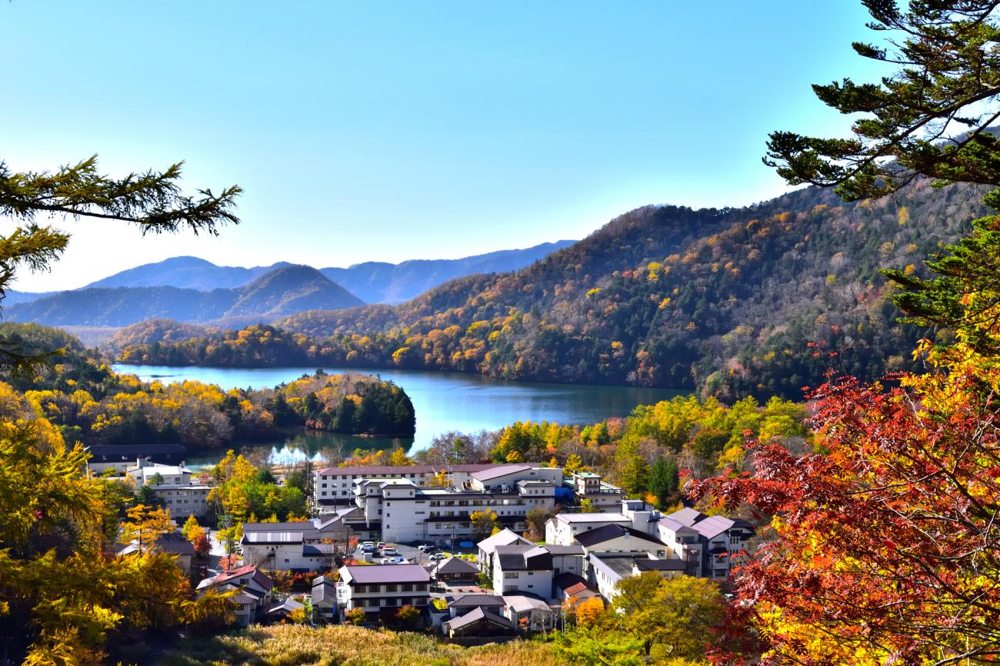

Nikko
Nikko offers a serene escape with the UNESCO-listed Toshogu Shrine, the majestic Kegon Falls, and lush mountain scenery. Just a 2-hour train ride from Tokyo, Nikko is at its best in autumn (October–November) when the foliage creates a vibrant tapestry.
